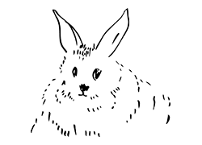
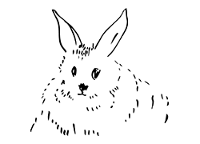
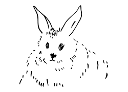

Hei, jeg heter Lily
Ting jeg liker
,
mat
og
friends
Things I like
I like lots of different things but here are some of them:
Playing with my friends
bones
the couch
My favourite food
The food I like best is:
dog food
fruit and vegetables
meat
My friends



 
